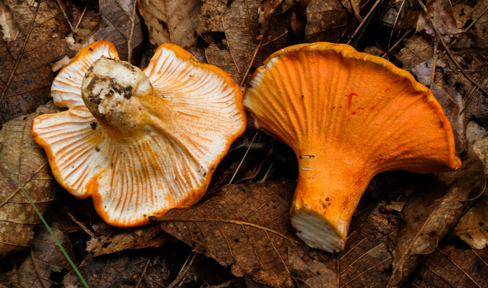
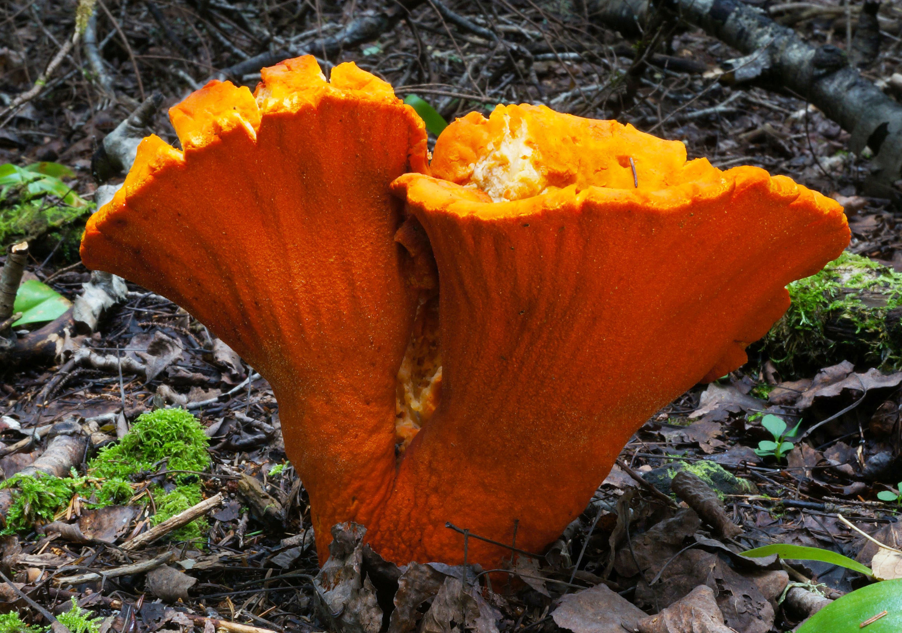
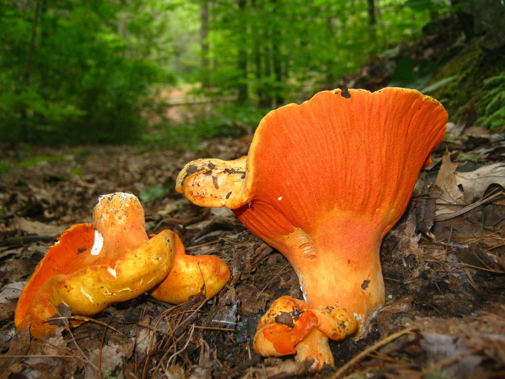
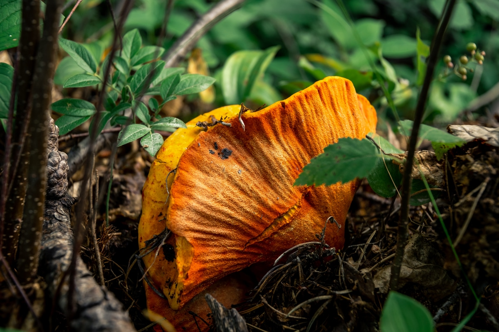

Hypomyces Lactifluorum
Lobster Mushroom
Contrary to its common name, the species itself is neither a lobster nor a mushroom.
Hypomyces lactifluorum, or the lobster mushroom, is a parasitic ascomycete fungus that grows on
certain
species of mushrooms, turning them a reddish orange color that resembles the outer shell of a
cooked
lobster. The fungus is edible.
Uses
Lobster mushrooms are widely eaten and enjoyed freshly foraged and cooked. They are commercially
marketed and sometimes found in grocery stores; they have been made available at markets in
Oregon. They have a seafood-like flavor and a firm, dense texture.
While edible, field guides note the hypothetical possibility that H. lactifluorum could
parasitize a toxic host and that individuals should avoid consuming lobster mushrooms with
unknown hosts, although no instances of toxicity have been recorded. During the course of
infection, the chemicals get converted into other more flavorful compounds, making lobster
mushrooms more edible. Lactarius piperatus has a spicy, hot flavor but that flavor is
counteracted by the parasite H. lactifluorum, making it more edible and delicious.
A study from Quebec found that an infected R. brevipes mushroom mostly contained lobster
mushroom DNA, with only trace amounts from the original species. This study also measured
intermediate products of chemical reactions, or metabolites, in infected and non-infected
mushrooms. Metabolites help determine how fungi look and taste, and whether they are fit to eat.
They found that through the course of its infection, the parasitic fungus completely alters the
diversity and amount of metabolites in R. brevipes.
Overall
Lobster Mushrooms are the strangest mushrooms you will ever eat. Yes, these mushrooms are even stranger than edible stinkhorns, which are foul-smelling and sometimes gelatinous Another fun fact is that lobster mushrooms are choice not only for eating but for dyeing. Lobster Mushrooms are great dyes and will impart a red color to your food. Their crunchy texture and unique color go well in stir fry, soups, stews, and similar dishes. They can also be sautéed or baked. The inner surface of a Lobster Mushroom is firm, white, and made by the host mushroom. Depending on the species of mushroom being parasitized, the interior may be fairly crumbly or ooze a latex. Because H. lactifluorum obscures the mushrooms features, it is impossible to identify the host mushroom without DNA analysis. You can make a good guess by looking at the russulas and lacteriuses fruiting nearby (there are usually some uninfected mushrooms around), but you can never by 100% sure that those represent the same mushroom.
   